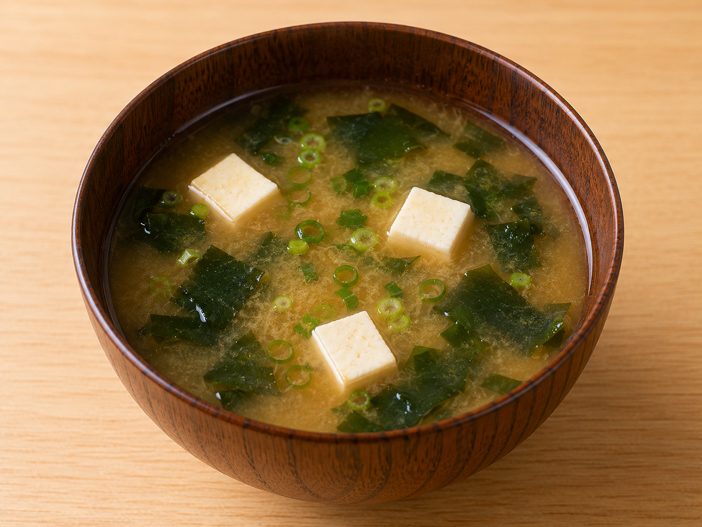
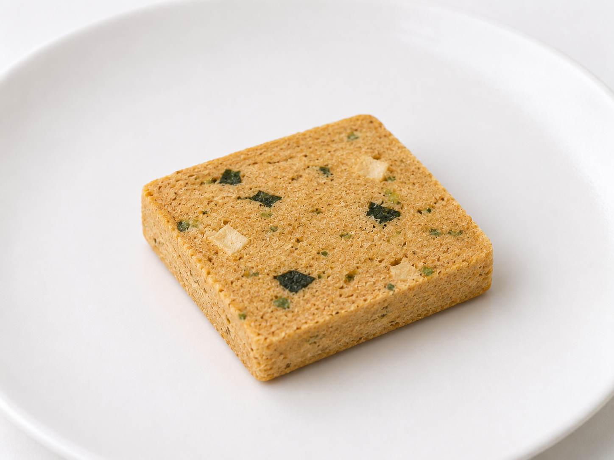
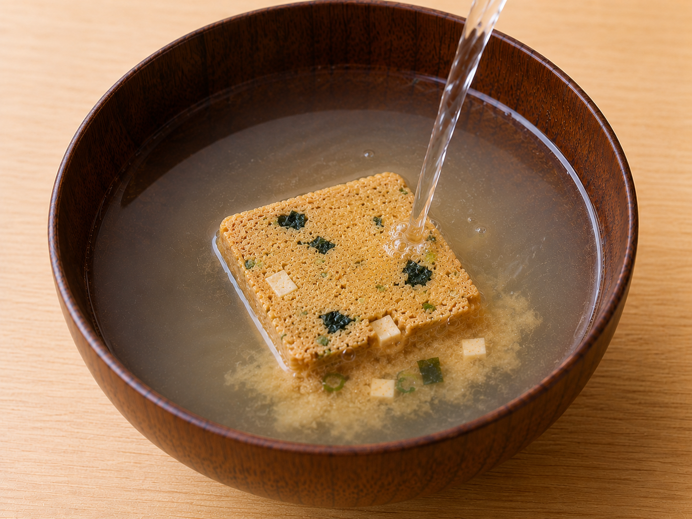
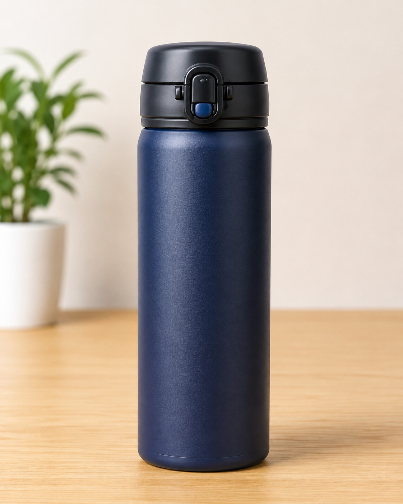
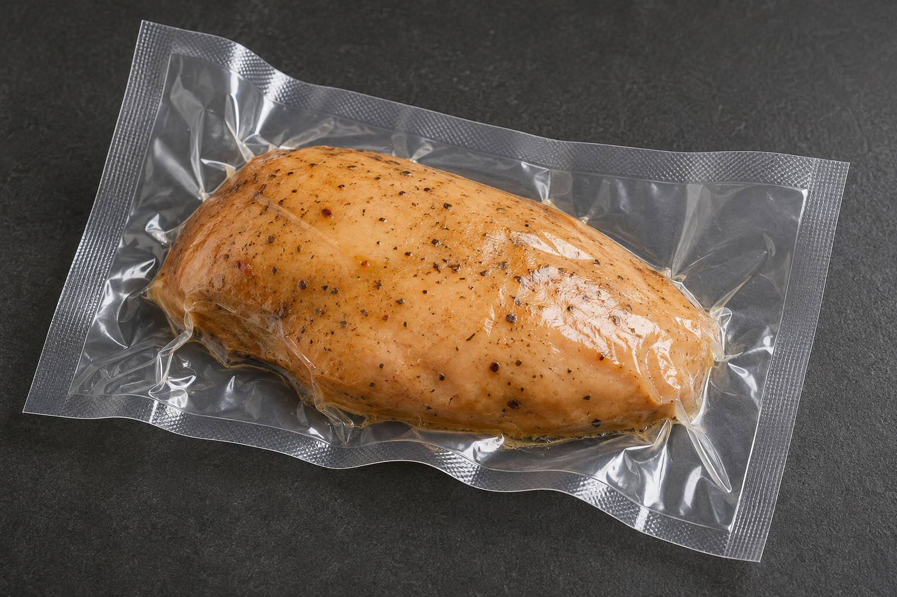
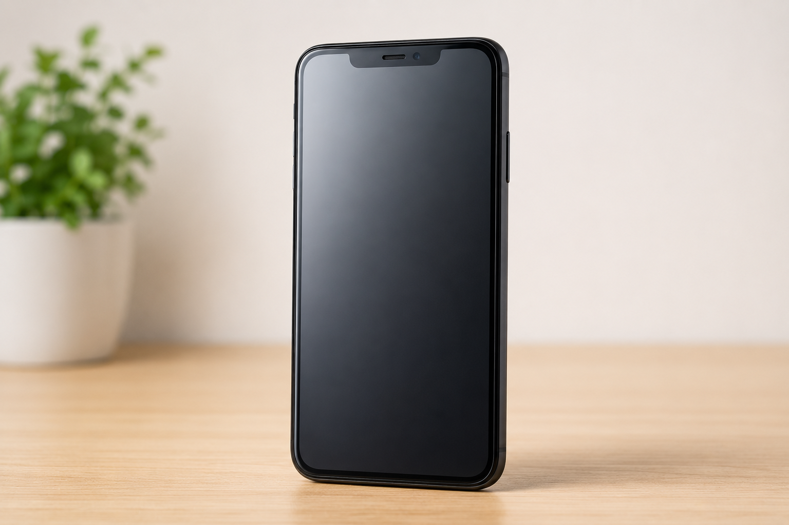
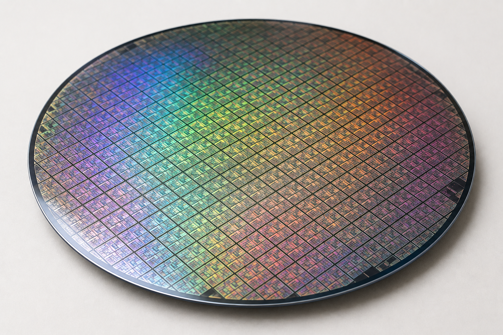
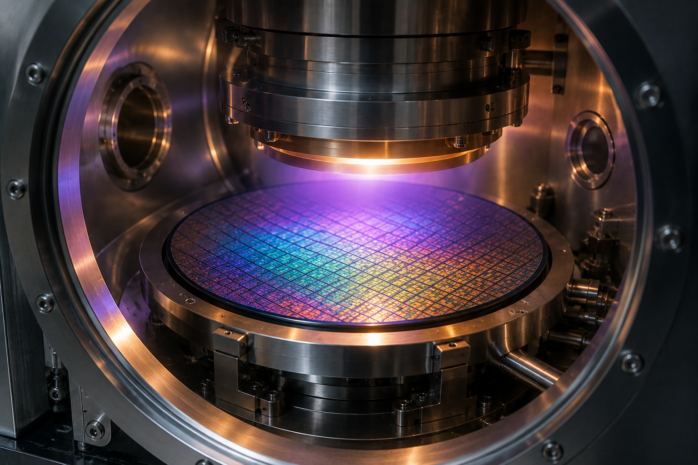
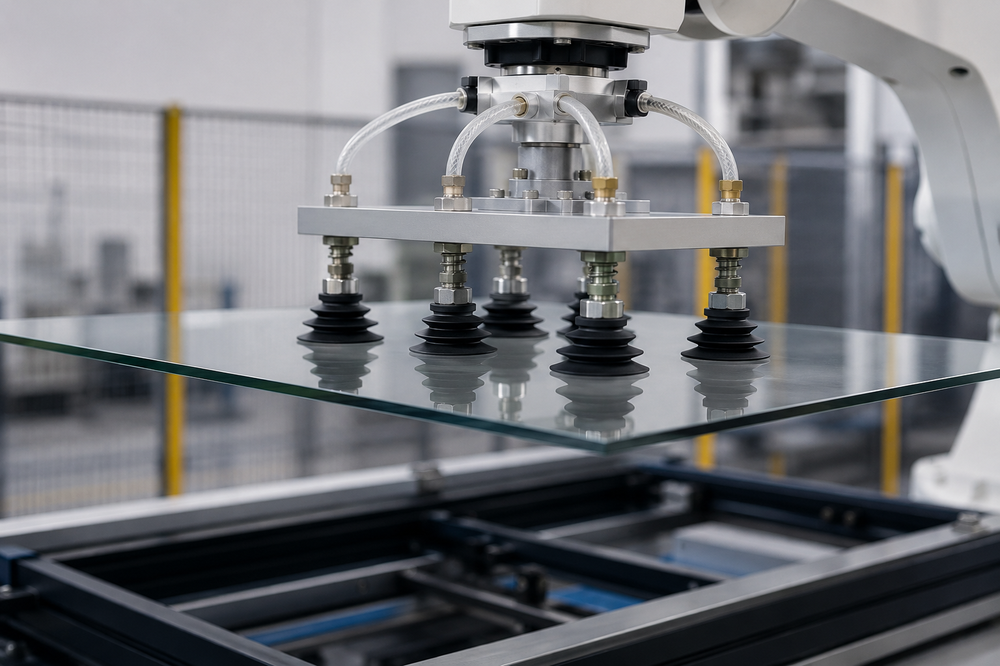

VACUUM TECHNOLOGY / 02
なぜ真空にする？
真空技術は、食品、水筒、スマートフォン、金属加工など、身近なところで使われています。ここでは「空気（気体）を減らすと何ができるのか」を、身近な例から見ていきます。
STEP 1
1. 真空にすると、何ができる？
01では、空気を抜くと気体分子が少なくなり、圧力が下がることを学びました。では、その「空気（気体）が少ない環境」は何に役立つのでしょうか。身近な例から見てみましょう。
食品水分を取り除きやすくする
魔法瓶熱を伝えにくくする
真空パック酸素との接触を減らす
半導体・薄膜製造環境をつくる
金属処理酸化を抑えやすくする
STEP 2
2. 食品を乾燥しやすくする ― フリーズドライ食品
フリーズドライでは、食品を凍らせたあと、真空・減圧下で氷を昇華させて水分を取り除きます。乾燥した食品は、お湯などで水分を戻して食べることができます。



※写真はイメージです。 3枚はフリーズドライ食品を身近にイメージするための例で、写真そのものが実際の製造工程を示しているわけではありません。
STEP 3
3. 熱を伝えにくくする ― 魔法瓶・真空断熱ボトル
内びんと外びんの間に真空層をつくると、気体による熱伝導や対流を大きく減らすことができます。これが、飲み物の温かさや冷たさを長く保ちやすい理由のひとつです。

真空層 →
飲み物
気体が少ない
↓
熱が伝わりにくい
ポイント：真空は熱を完全に遮断するものではありませんが、気体を介した熱の移動を減らすのに役立ちます。
STEP 4
4. 空気との接触を減らす ― 食品の真空パック
袋の中から空気を抜くと、食品のまわりにある酸素も減ります。酸素との接触を少なくすることで、酸化などの品質変化を抑えるのに役立ちます。
食品を袋へ袋の中には空気がある
→ 空気を抜く袋の中の気体を減らす
→ 酸素も減る食品との接触が少なくなる
→ 保存に利用酸化などを抑えやすい

STEP 5
5. スマートフォンをつくる ― 半導体・薄膜
スマートフォンそのものが真空になっているわけではありません。中で使われる半導体や薄膜をつくる製造工程で、真空技術が活躍しています。

→

→

つながり：身近なスマートフォン → 中で使われる半導体 → その半導体をつくる真空プロセス、という関係です。
STEP 6
6. ものを持ち上げる ― 真空吸着
吸着パッドを対象物に密着させて内部の空気を抜くと、パッドの内側の圧力が低くなります。外側との圧力差を利用することで、ガラスや金属板などを吸着して持ち上げることができます。
吸着パッドをつける対象物に密着させる
→ 空気を抜くパッド内部の圧力を下げる
→ 圧力差ができる外側の大気圧の方が高くなる
→ 持ち上げる吸着したまま搬送できる

身近な原理：吸盤がくっつく仕組みにも圧力差が関係しています。工場では、この原理を利用してガラス、金属板、電子部品などを持ち上げたり搬送したりします。
まとめ
身近なものも、基本は同じ
真空は「空気が少ない」だけではありません。その環境を利用することで、断熱・乾燥・保存・薄膜形成・吸着搬送など、さまざまな技術に役立っています。
食品の乾燥
水分を取り除きやすくする
水分を取り除きやすくする
魔法瓶
熱の移動を減らす
熱の移動を減らす
真空パック
酸素との接触を減らす
酸素との接触を減らす
半導体・薄膜
製造環境をつくる
製造環境をつくる
真空吸着
圧力差でものを持ち上げる
圧力差でものを持ち上げる